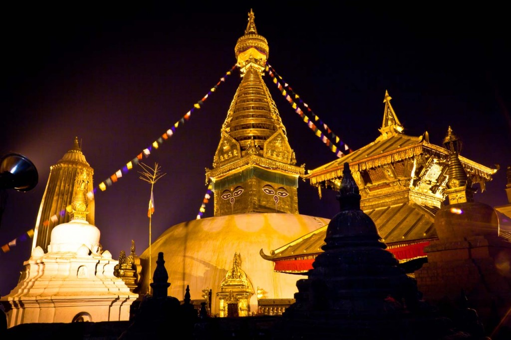
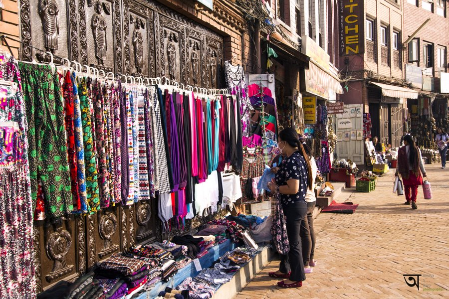
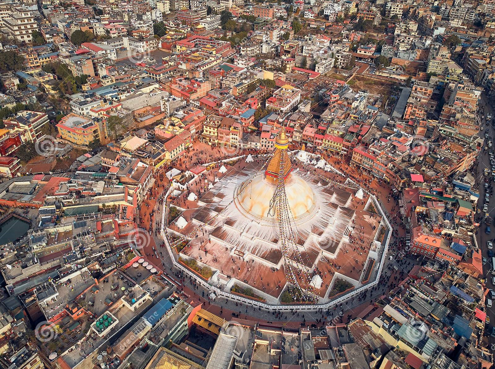
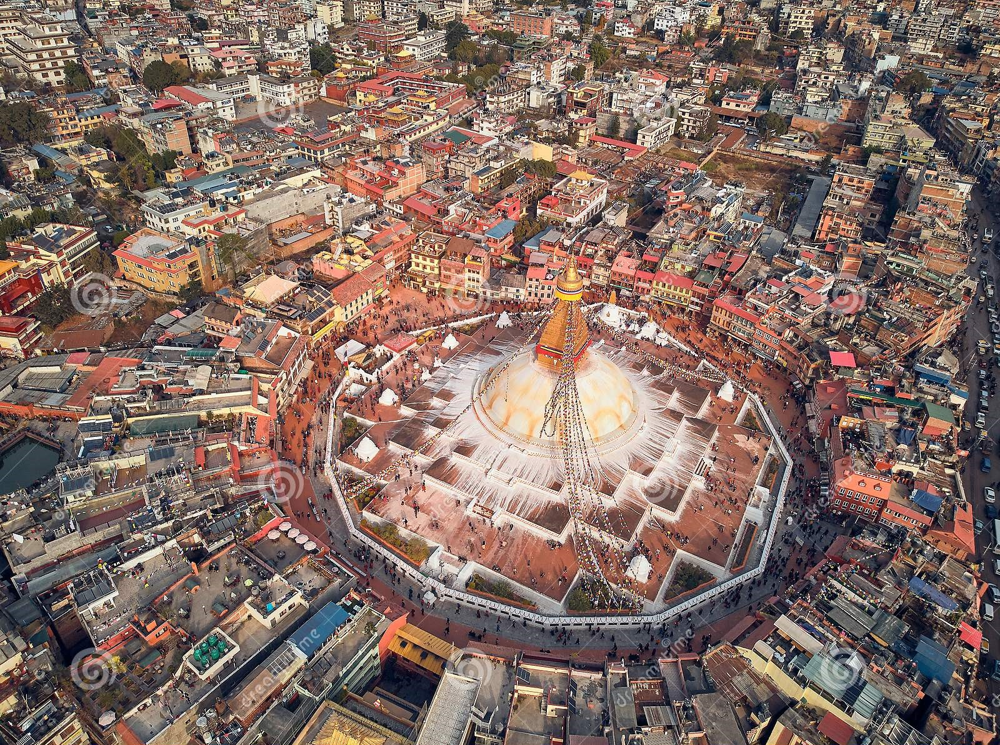
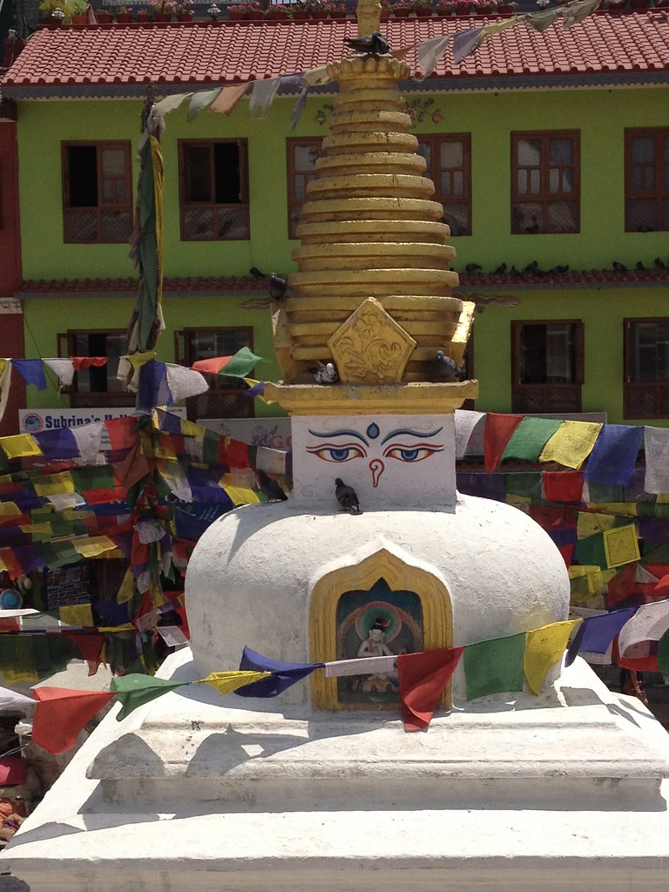
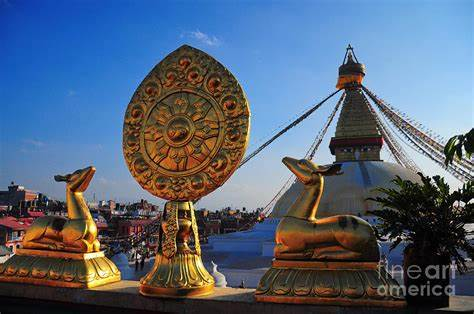

Boudhanath Temple
 Boudhanath, also known as Boudha, is
one of the most sacred and significant heritage sites in Kathmandu.Located in the northeastern part of the
city, Boudhanath Stupa stands as a symbol of Tibetan Buddhism and isa UNESCO World Heritage Site. At the
heart of Boudha is the magnificent Boudhanath Stupa, one of the largeststupas in the world. Thiscolossal
white dome-shaped structure with its distinctive eyes painted on all foursides is a sight to behold. The
stupa is believed to date back to the 5th century and is considered a potentcenter of spiritual energy.
 Surrounding the stupa is a
vibrant and bustling neighborhood, home to alarge Tibetan community and
numerous monasteries, shops, and cafes. The area is filled with the scent of
incense and resonates with
the chanting of prayers and the spinning of prayer wheels by devoted pilgrims.Pilgrims and visitors can be
seencircumambulating the stupa in a clockwise direction, spinning prayer wheels and reciting mantras.
This ritual is believed to accumulate merit and bring blessings. The serene and spiritual atmosphere of
Boudhanath provides a tranquil space for meditation, reflection, and seeking spiritual solace.
Surrounding the stupa is a
vibrant and bustling neighborhood, home to alarge Tibetan community and
numerous monasteries, shops, and cafes. The area is filled with the scent of
incense and resonates with
the chanting of prayers and the spinning of prayer wheels by devoted pilgrims.Pilgrims and visitors can be
seencircumambulating the stupa in a clockwise direction, spinning prayer wheels and reciting mantras.
This ritual is believed to accumulate merit and bring blessings. The serene and spiritual atmosphere of
Boudhanath provides a tranquil space for meditation, reflection, and seeking spiritual solace.


 


The Boudhanath area is also a center for Tibetan Buddhist learning and practice. Numerous monasteries and
meditation centers line the streets, offering teachings, retreats, and opportunities for deepening one's
understanding of Buddhism.Throughout the year, various Buddhist festivals and rituals take place at
Boudhanath, attracting devotees from far and wide.

One such notable event is the Tibetan New Year, or Losar, when the stupa is adorned with
colorful prayer flags and celebratory rituals fill the air with joy and festivity.
Boudhanath has not only been a place of religious significance but also a symbol of resilience. It suffered
significant damage during the 2015 earthquake but was meticulously restored, reaffirming its importance as a
cultural and spiritual icon. A visit to Boudhanath offers a unique and profound experience, immersing
visitors in the rich TibetanBuddhist heritage and the teachings of compassion and mindfulness. The stupa's
architectural grandeur, the vibrant spiritual community, and the aura of devotion make Boudhanath a
must-visit destination for seekers of peace and enlightenment in Kathmandu.